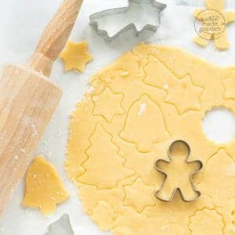

Einfacher Plätzchenteig

Ein Plätzchenteig-Grundrezept für die ganze Familie: Diese
Mürbeteig-Plätzchen zum Ausstechen sind aus gutem Grund ein
Klassiker der Weihnachtsbäckerei!
Vorbereitung: 15min
Backzeit: 10min
Kühlzeit: 30min
Menge 45 Plätzchen
Zutaten
- Mehl und Zucker in eine Schüssel geben. Die Butter in kleinen Stückchen sowie das
Ei hinzufügen und zu einem Mürbteig verkneten. Der Teig mag erst einmal bröselig erscheinen,
wird bei weiterem Kneten dann aber zu einer Art Brösel und schließlich einem homogenen Teig.
Evtl. zum Schluss mit den Händen nacharbeiten.
- Teig zu zwei Kugeln formen und in Folie gewickelt für mindestens eine halbe Stunde kühlstellen.
Länger ist noch besser.